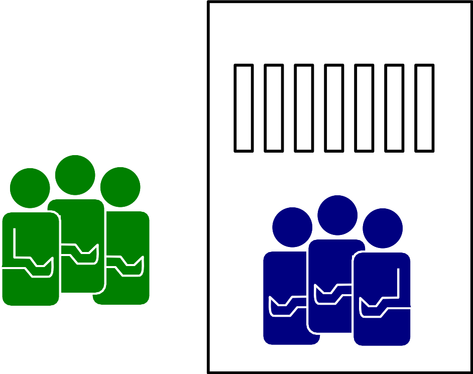
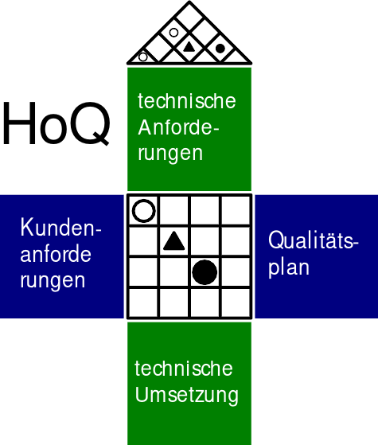

Kundenorientierung & Beschwerdemangement
KOM-ITIL
Sebastian Meisel
Kundenorientierung & Beschwerdemanagement
======= <<<<<<< HEAD:02_Kundenorientierung.html <<<<<<< HEADKundenorientierung & Beschwerdemanagement
=======Kundenorientierung & Beschwerdemanagement
>>>>>>> Sommer23_FIAED =======Kundenorientierung & Beschwerdemanagement
>>>>>>> 730a0f3 (Fehlerkorrektur):Kundenorientierung.html >>>>>>> Sommer23_FIAEB- Kundenanforderungen identifizieren
- Kundenzufriedenheit ermitteln
- Kundenbeschwerden managen
- Kundenbindung stärken
Differenzierung von internen und externen Kunden
=======
<<<<<<< HEAD:02_Kundenorientierung.html
<<<<<<< HEAD
Differenzierung von internen und externen Kunden
=======
Differenzierung von internen und externen Kunden
>>>>>>> Sommer23_FIAED
=======
Differenzierung von internen und externen Kunden
>>>>>>> 730a0f3 (Fehlerkorrektur):Kundenorientierung.html
>>>>>>> Sommer23_FIAEB
<<<<<<< HEAD
- Externe Kunden: Individuen, Unternehmen oder Einheiten außerhalb einer Organisation, die die Endprodukte oder Dienstleistungen erhalten.
- Interne Kunden: Mitarbeiter oder Abteilungen innerhalb einer Organisation, die Dienstleistungen oder Produkte von anderen internen Einheiten erhalten.
=======
<<<<<<< HEAD:02_Kundenorientierung.html
<<<<<<< HEAD
=======
>>>>>>> Sommer23_FIAED
=======
>>>>>>> 730a0f3 (Fehlerkorrektur):Kundenorientierung.html
>>>>>>> Sommer23_FIAEB
<<<<<<< HEAD

Prinzip der Kunden-Lieferanten-Beziehung
=======
<<<<<<< HEAD:02_Kundenorientierung.html
<<<<<<< HEAD
Prinzip der Kunden-Lieferanten-Beziehung
=======
Prinzip der Kunden-Lieferanten-Beziehung
>>>>>>> Sommer23_FIAED
=======
Prinzip der Kunden-Lieferanten-Beziehung
>>>>>>> 730a0f3 (Fehlerkorrektur):Kundenorientierung.html
>>>>>>> Sommer23_FIAEB
<<<<<<< HEAD
- Grundprinzip: Jeder Prozess in einer Kette hat einen "Kunden" und einen "Lieferanten".
- Interne Kunden: Abteilungen oder Teams, die den Output eines vorherigen Prozesses als Input nutzen.
- Qualitätssicherung: Jeder Prozess muss die Anforderungen seines "Kunden" erfüllen.
- Kontinuierliche Verbesserung: Feedback-Schleifen zwischen "Kunden" und "Lieferanten" fördern die Optimierung.
=======
<<<<<<< HEAD:02_Kundenorientierung.html
<<<<<<< HEAD
=======
>>>>>>> Sommer23_FIAED
=======
<<<<<<< HEAD
<<<<<<< HEAD
<<<<<<< HEAD
<<<<<<< HEAD
>>>>>>> 730a0f3 (Fehlerkorrektur):Kundenorientierung.html
>>>>>>> Sommer23_FIAEB
Kundenanforderungen identifizieren
======= <<<<<<< HEAD:02_Kundenorientierung.html <<<<<<< HEADKundenanforderungen identifizieren
=======Kundenanforderungen identifizieren
>>>>>>> Sommer23_FIAED =======Kundenanforderungen identifizieren
>>>>>>> 730a0f3 (Fehlerkorrektur):Kundenorientierung.html >>>>>>> Sommer23_FIAEBHerausforderungen
- Unklare Anforderungen
- Sich ändernde Anforderungen
- Technische Einschränkungen
- Kommunikationslücken
- Priorisierung von Anforderungen
Traditionelle Lösungen
======= <<<<<<< HEAD:02_Kundenorientierung.html <<<<<<< HEADTraditionelle Lösungen
=======Traditionelle Lösungen
>>>>>>> Sommer23_FIAED =======Traditionelle Lösungen
>>>>>>> 730a0f3 (Fehlerkorrektur):Kundenorientierung.html >>>>>>> Sommer23_FIAEB- Fragebögen und Umfragen
- Persönliche Interviews
- Brainstorming-Sitzungen
- Flowcharts und Diagramme
Moderne Tools
======= <<<<<<< HEAD:02_Kundenorientierung.html <<<<<<< HEADModerne Tools
=======Moderne Tools
>>>>>>> Sommer23_FIAED =======Moderne Tools
>>>>>>> 730a0f3 (Fehlerkorrektur):Kundenorientierung.html >>>>>>> Sommer23_FIAEB- Agile Methoden (Scrum, Kanban)
- User Stories & Akzeptanzkriterien
- Prototyping-Tools (Figma, Sketch)
- Anforderungsmanagement-Software (JIRA, Trello)
Quality Function Deployment (QFD) in der IT
======= <<<<<<< HEAD:02_Kundenorientierung.html <<<<<<< HEADQuality Function Deployment (QFD) in der IT
=======Quality Function Deployment (QFD) in der IT
>>>>>>> Sommer23_FIAED =======Quality Function Deployment (QFD) in der IT
>>>>>>> 730a0f3 (Fehlerkorrektur):Kundenorientierung.html >>>>>>> Sommer23_FIAEB- Kundenanforderungen erfassen
- "House of Quality" erstellen
- Beziehungen definieren & Prioritäten setzen
- Kontinuierliche Verbesserung
=======
<<<<<<< HEAD:02_Kundenorientierung.html
<<<<<<< HEAD
=======
>>>>>>> Sommer23_FIAED
=======
<<<<<<< HEAD
<<<<<<< HEAD
>>>>>>> 730a0f3 (Fehlerkorrektur):Kundenorientierung.html
>>>>>>> Sommer23_FIAEB

Abbildung 1: House of Quality
Kundenzufriedenheit messen
======= <<<<<<< HEAD:02_Kundenorientierung.html <<<<<<< HEADKundenzufriedenheit messen
=======Kundenzufriedenheit messen
>>>>>>> Sommer23_FIAED =======Kundenzufriedenheit messen
>>>>>>> 730a0f3 (Fehlerkorrektur):Kundenorientierung.html >>>>>>> Sommer23_FIAEBWozu?
- Kundenbindung: Zufriedene Kunden sind loyaler.
- Produktverbesserung: Feedback hilft bei Optimierungen.
- Marktpositionierung: Verständnis schafft Wettbewerbsvorteile.
Herausforderungen:
- Repräsentativität: Sicherstellen einer repräsentativen Stichprobe.
- Ehrliches Feedback: Vermeidung von Biases.
- Dateninterpretation: Richtige Umsetzung des Feedbacks.
Direkte Kundenbefragung: Fragebogen, Web-Formular, Umfrage
- Customer Satisfaction Score (CSAT): Durrchschnitt aller Kundenbewertungen
=======
<<<<<<< HEAD:02_Kundenorientierung.html
<<<<<<< HEAD
Direkte Kundenbefragung: Fragebogen, Web-Formular, Umfrage
- Customer Satisfaction Score (CSAT): Durchschnitt aller Kundenbewertungen
=======
Direkte Kundenbefragung: Fragebogen, Web-Formular, Umfrage
=======Direkte Kundenbefragung: Fragebogen, Web-Formular, Umfrage
>>>>>>> 730a0f3 (Fehlerkorrektur):Kundenorientierung.html- Customer Satisfaction Score (CSAT): Durchschnitt aller Kundenbewertungen
>>>>>>> Sommer23_FIAED
=======
>>>>>>> 730a0f3 (Fehlerkorrektur):Kundenorientierung.html
>>>>>>> Sommer23_FIAEB
- Net Promoter Score (NPS): Anzahl (Promoter) – Anzahl (Kritiker)
=======
<<<<<<< HEAD:02_Kundenorientierung.html
<<<<<<< HEAD
=======
>>>>>>> Sommer23_FIAED
=======
<<<<<<< HEAD
<<<<<<< HEAD
<<<<<<< HEAD
<<<<<<< HEAD
<<<<<<< HEAD
<<<<<<< HEAD
=======
<<<<<<< HEAD:02_Kundenorientierung.html
<<<<<<< HEAD
=======
>>>>>>> Sommer23_FIAED
=======
>>>>>>> 730a0f3 (Fehlerkorrektur):Kundenorientierung.html
>>>>>>> Sommer23_FIAEB
<<<<<<< HEAD
>>>>>>> 730a0f3 (Fehlerkorrektur):Kundenorientierung.html
>>>>>>> Sommer23_FIAEB

- Der Customer Effort Score (CES) misst den Aufwand, den ein Kunde aufwenden muss, um ein bestimmtes Problem zu lösen.
Vor- und Nachteile direkter Kundenbefragungen
======= <<<<<<< HEAD:02_Kundenorientierung.html <<<<<<< HEADVor- und Nachteile direkter Kundenbefragungen
=======Vor- und Nachteile direkter Kundenbefragungen
>>>>>>> Sommer23_FIAED =======Vor- und Nachteile direkter Kundenbefragungen
>>>>>>> 730a0f3 (Fehlerkorrektur):Kundenorientierung.html >>>>>>> Sommer23_FIAEBVorteile:
- Direktes Feedback: Unmittelbare Rückmeldungen zu Produkten, Dienstleistungen oder allgemeinen Erfahrungen.
- Quantifizierbare Daten: Ermöglicht statistische Analysen und Trends.
- Anpassungsfähigkeit: Fragen können spezifisch auf Unternehmensbedürfnisse zugeschnitten werden.
Nachteile:
- Aufwand: Je umfangreicher die Befragung, desto geringer die Rücklaufquote.
- Biases: Antwortverzerrungen wie soziale Erwünschtheit oder Reihenfolgeeffekte können die Ergebnisse beeinflussen.
- Aussagekraft: Eine hohe Anzahl an Rückmeldungen garantiert nicht immer eine hohe Qualität oder Repräsentativität der Daten.
Indirekte Kundenbefragung: Fragebogen, Web-Formular, Umfrage
======= <<<<<<< HEAD:02_Kundenorientierung.html <<<<<<< HEADIndirekte Kundenbefragung: Analyse interner und externer Daten
=======Indirekte Kundenbefragung: Fragebogen, Web-Formular, Umfrage
>>>>>>> Sommer23_FIAED =======Indirekte Kundenbefragung: Analyse interner und externer Daten
>>>>>>> 730a0f3 (Fehlerkorrektur):Kundenorientierung.html >>>>>>> Sommer23_FIAEB1. Analyse von Kundenbewertungen:
- Auswertung von Online-Bewertungen und -Rezensionen.
2. Social Media Monitoring:
- Beobachtung von Kundenfeedback und -meinungen in sozialen Netzwerken.
3. Verkaufszahlen und Wiederkaufsraten:
- Analyse von Verkaufstrends und Kundenloyalität.
"Things Gone Wrong"-Methode
======= <<<<<<< HEAD:02_Kundenorientierung.html <<<<<<< HEAD"Things Gone Wrong"-Methode
======="Things Gone Wrong"-Methode
>>>>>>> Sommer23_FIAED ======="Things Gone Wrong"-Methode
>>>>>>> 730a0f3 (Fehlerkorrektur):Kundenorientierung.html >>>>>>> Sommer23_FIAEB- Fokus auf Probleme: Identifizierung spezifischer Problembereiche.
- Problemlösung: Gezielte Maßnahmen zur Behebung von Kundenproblemen.
- Vergleich mit Konkurrenten: Bewertung der Leistung im Branchenvergleich.
- Einfache Interpretation: Niedrigere Werte sind besser, da sie weniger Probleme anzeigen.
Vor- und Nachteile indirekter Methoden
======= <<<<<<< HEAD:02_Kundenorientierung.html <<<<<<< HEADVor- und Nachteile indirekter Methoden
=======Vor- und Nachteile indirekter Methoden
>>>>>>> Sommer23_FIAED =======Vor- und Nachteile indirekter Methoden
>>>>>>> 730a0f3 (Fehlerkorrektur):Kundenorientierung.html >>>>>>> Sommer23_FIAEBVorteile:
- Umfassende Daten: Nutzung vorhandener Datenquellen.
- Zeiteffizient: Keine zusätzlichen Umfragen oder Befragungen erforderlich.
- Unverfälschtes Feedback: Keine Beeinflussung durch direkte Befragung.
Nachteile:
- Mögliche Verzerrungen: Daten können nicht immer direkt auf Zufriedenheit zurückgeführt werden.
- Fehlende Tiefe: Weniger detaillierte Informationen als bei direkten Befragungen.
- Reaktionsverzögerung: Feedback kann zeitverzögert oder veraltet sein.
Beschwerdemangement
======= <<<<<<< HEAD:02_Kundenorientierung.html <<<<<<< HEADBeschwerdemangement
=======Beschwerdemangement
>>>>>>> Sommer23_FIAED =======Beschwerdemangement
>>>>>>> 730a0f3 (Fehlerkorrektur):Kundenorientierung.html >>>>>>> Sommer23_FIAEBWas ist Beschwerdemanagement?
- Systematischer Prozess zur Erfassung, Bearbeitung und Analyse von Kundenbeschwerden.
Warum ist es wichtig?
- Erkenntnisse über Kundenerwartungen und -bedürfnisse.
- Möglichkeit zur Steigerung der Kundenzufriedenheit.
- Chance zur kontinuierlichen Verbesserung von Produkten und Dienstleistungen.
Ziel des Beschwerdemanagements:
- Probleme effektiv lösen und negative Kundenerfahrungen in positive Erlebnisse umwandeln.
Beschwerden als Geschenk
======= <<<<<<< HEAD:02_Kundenorientierung.html <<<<<<< HEADBeschwerden als Geschenk
=======Beschwerden als Geschenk
>>>>>>> Sommer23_FIAED =======Beschwerden als Geschenk
>>>>>>> 730a0f3 (Fehlerkorrektur):Kundenorientierung.html >>>>>>> Sommer23_FIAEBWertvolle Rückmeldung:
- Kostenlose Beratung über Verbesserungspotenzial.
- Erkennen von Schwachstellen und Problembereichen.
Chance zur Verbesserung:
- Optimierung von Produkten und Dienstleistungen.
- Behebung wiederkehrender Probleme.
Kundenbindung:
- Umgang mit Beschwerden fördert Loyalität.
- Zeigt Kunden, dass ihre Bedenken ernst genommen werden.
Positive Mundpropaganda:
- Zufriedene Kunden nach effektiver Beschwerdebearbeitung.
- Förderung des Unternehmensrufs.
Risikomanagement:
- Erkennen potenzieller rechtlicher Risiken.
- Frühzeitige Behebung von Problemen.
Vermeidung zukünftiger Fehler:
- Identifizierung von Mustern in Beschwerden.
- Proaktive Maßnahmen zur Fehlervermeidung.
Beschwerde vs. Reklamation
======= <<<<<<< HEAD:02_Kundenorientierung.html <<<<<<< HEADBeschwerde vs. Reklamation
=======Beschwerde vs. Reklamation
>>>>>>> Sommer23_FIAED =======Beschwerde vs. Reklamation
>>>>>>> 730a0f3 (Fehlerkorrektur):Kundenorientierung.html >>>>>>> Sommer23_FIAEBBeschwerde:
- Allgemeines Feedback oder Unzufriedenheit über ein Produkt oder eine Dienstleistung.
- Keine rechtlichen Folgen, aber wichtig für das Kundenbeziehungsmanagement.
=======
<<<<<<< HEAD:02_Kundenorientierung.html
<<<<<<< HEAD
=======
>>>>>>> Sommer23_FIAED
=======
>>>>>>> 730a0f3 (Fehlerkorrektur):Kundenorientierung.html
>>>>>>> Sommer23_FIAEB
Reklamation:
- Einwand aufgrund eines Sachmangels bei einem Produkt oder einer nicht vertragsgemäßen Dienstleistung.
- Rechtlich verankert: Bei Sachmängeln haben Kunden Anspruch auf Nachbesserung, Umtausch, Minderung oder Rücktritt vom Vertrag.